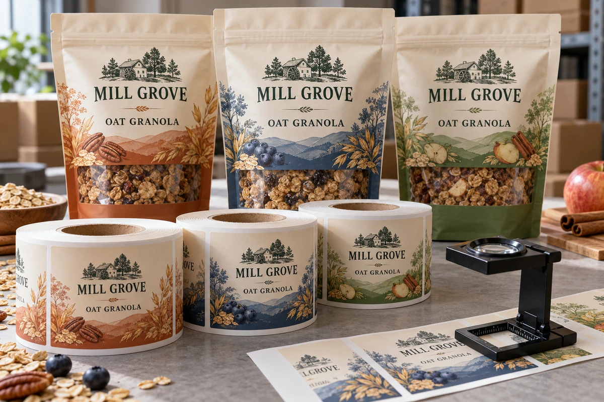
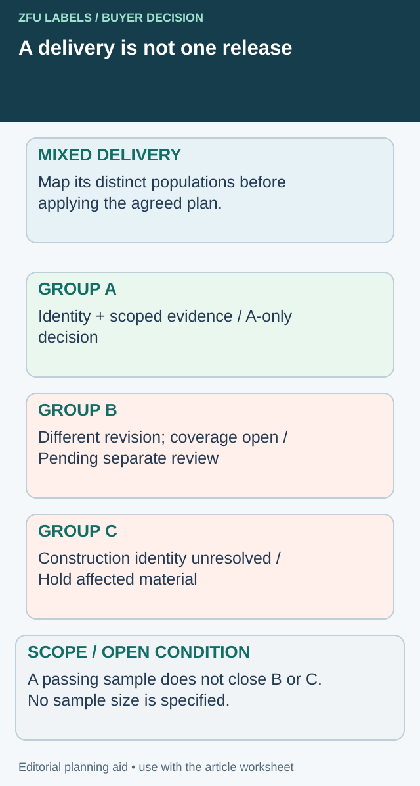

A delivery contains several cartons, three artworks and rolls from more than one printing run. Receiving opens the top carton, checks a few labels and marks the whole delivery accepted. The inspection may be careful, but its conclusion has no clear boundary: which stock did those samples represent?
Define the inspection lot before choosing the samples. Separate identity checks, agreed quality observations and the release decision. A small number of acceptable labels cannot automatically establish that every roll, artwork and manufacturing batch in a mixed shipment is correct.

Make the coverage boundary visible before release
A practical receiving decision needs two maps: what arrived, and what the inspection actually represented. Do not let a completed check against one group close the other groups automatically. The coverage map below makes that gap visible before a warehouse stamp turns into permission to use everything.


For a hypothetical mixed delivery, call the groups A, B and C. A and B have different artwork revisions; C has a construction reference that has not been reconciled. These letters are teaching identifiers, not actual supplier lots or a recommended statistical grouping. The quality owner must decide the real populations and applicable sampling plan.
| Proposed population | Identity question | Evidence boundary | Disposition to record |
|---|---|---|---|
| A: identified revision | Do samples and rolls match A? | Named sample origins and agreed checks for A | A-specific decision by the authorized owner |
| B: another revision | Was B included in its own relevant review? | An A sample does not represent B merely because both arrived together | Keep B pending until its basis is resolved |
| C: unresolved construction | What supplied item does C contain? | Identity is open; a neat appearance cannot supply the missing reference | Hold the affected C material for clarification |
The NIST explanation of acceptance sampling distinguishes a lot-disposition decision from estimating its quality. This worksheet adds a receiving coverage record; it supplies no sample size, acceptance number or confidence claim.
Deal with the urgent partial-release request
If production needs A now, ask whether A can be physically separated, independently identified and released under the agreed procedure. Keep B and C outside that instruction. If anonymous inner rolls prevent separation, the operational boundary is not yet usable even when A's loose samples looked correct. Resolve identification or defer the proposed partial release.
Record newly opened cartons and material removed for inspection against their actual origins. When later evidence covers B, add that evidence and a new disposition event rather than rewrite the earlier inspection as if it included B. This preserves the difference between a narrow decision made correctly and a broad decision with missing support.
The trade-off is receiving work and potentially delayed stock availability. Inspecting every easy-to-reach item is faster, but does not answer the population question. Buying more inspection work is useful only if its agreed design closes the specific coverage gap.
Start with the delivery structure
Reconcile the purchase order, packing list and physical carton marks. Identify the SKU, artwork revision, construction, manufacturing reference and quantity associated with each delivered group. Ask the supplier to explain any missing or combined references before sampling anonymous material.
An inspection lot is a group defined for the inspection decision. It should not be assumed to equal a truckload, purchase order or carton. Your quality team and supplier need an agreed basis for grouping material with relevant common characteristics. Different artworks, constructions or production events may require separate identification even when they arrive together.
This article does not prescribe a statistical sample size or acceptance number. If your organization uses an agreed acceptance-sampling standard, use its applicable edition and plan with a qualified reviewer. A percentage borrowed from another factory is not a substitute for that agreement.
Separate the questions the inspection must answer
Identity is often the first question: does the roll contain the correct artwork and version? Physical format follows: are the core, unwind and dimensions those ordered? Appearance and functional checks then address the relevant risks and agreed specification. Each question may need a different sample and a different acceptance basis.
Do not treat barcode scanning as a universal quality certificate. A scan may show that one device reads one symbol; it does not replace an agreed verification method or prove that the encoded identifier belongs to the SKU. The barcode verification guide explains that distinction.
Likewise, a good loose label does not prove machine dispensing. If a particular construction requires an application trial, put that activity in the release route rather than expecting the receiving bench to establish performance it cannot reproduce.
Build the inspection brief before opening cartons
| Decision field | Record before sampling |
|---|---|
| Delivery identity | PO, supplier delivery and receiving date |
| Lot definition | Included SKU, revision, construction and production references |
| Exclusions | Other lots or unidentified material held separately |
| Sampling basis | Agreed plan, responsible reviewer and where samples are taken |
| Identity checks | Artwork, encoded data, component and carton/roll reference |
| Physical checks | Ordered dimensions, format and relevant roll features |
| Appearance checks | Named reference, viewing conditions and defect descriptions |
| Functional checks | Required method, equipment and sample condition |
| Decision | Released, held or rejected under the agreed rule |
| Remaining material | Location, status marking and authorized next action |
This is an editorial inspection-planning asset. It helps specify the job; it does not create a supplier quality agreement by itself. Obtain agreement before relying on a sampling result to accept or reject commercial stock.
Choose samples that represent the stated decision
If the plan calls for samples across cartons or rolls, preserve their origin. Mark which carton, roll and position each sample came from. A bag of detached labels without those references can be useful for visual discussion but weak evidence for locating affected stock.
Avoid selecting only the easiest material to reach and later describing it as representative. Ask how the chosen sampling method addresses the delivery structure. Where a new supplier, a construction change or a previous defect changes the risk, the quality owner should decide whether the existing plan remains appropriate.
Destructive checks consume material. Agree how opened rolls, removed labels and tested packs are counted and stored afterward. Otherwise, the inspection can create an unexplained shortage that is later attributed to the supplier.
Use defect descriptions that two people can apply
Terms such as poor print or bad glue invite disagreement. Describe the observed condition and its location. Examples might include an incorrect artwork revision, a cut outside the approved boundary, an unreadable required field or a damaged core that prevents the agreed loading method. Whether a defect is critical, major or minor depends on the actual requirements and quality agreement.
Reference samples can help, but identify their approval status and condition. Do not compare new labels with a faded sample that no longer represents the agreed target. If a criterion is missing, record the gap and resolve it; do not invent a numerical tolerance during the dispute.
For an apparent missing-label issue, the roll investigation guide helps define which finished packs need review. Receiving inspection and production containment are related activities with different evidence.
Hold the affected stock with a usable identity
When an issue is found, record the sampled lot and the material provisionally held. Avoid releasing a mixed carton simply because another SKU inside it passed. Also avoid describing every delivery from that supplier as defective without evidence connecting the lots.
Take photographs before rework and retain suitable samples under an agreed method. Inform the relevant internal owner of the quantity, production need and uncertainty. The co-packer receiving guide distinguishes physical receipt from authorization to use the labels on the line.
Turn the result into a clear release
Record who made the disposition decision, its basis and the stock covered. If the decision is conditional, state the condition and the person responsible for closing it. A receiving stamp should not conceal an outstanding machine trial or unresolved artwork identity.
Resolve the specific label handoff
Include delivery/lot structure, agreed inspection plan and the unidentified or unrepresented groups.
Prepare the label specification inquiry. The form opens an email draft for your review; attachments go through the listed email or WhatsApp route. Actual supply scope, pricing, samples and timing need project confirmation.
Related decisions: Retained Label Samples: Keep Enough Evidence for a Later Complaint; A Label Quality Complaint: Preserve the Pack and Roll Before Rework; Labels Sent to a Co-Packer: Separate Receipt from Production Release